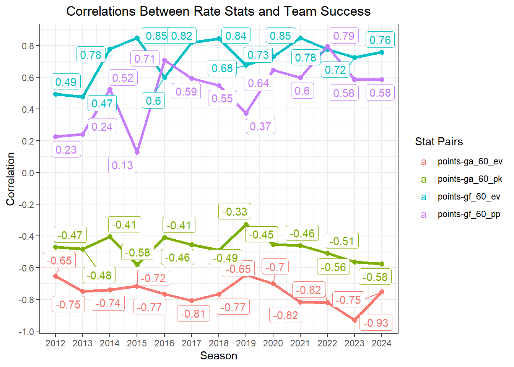
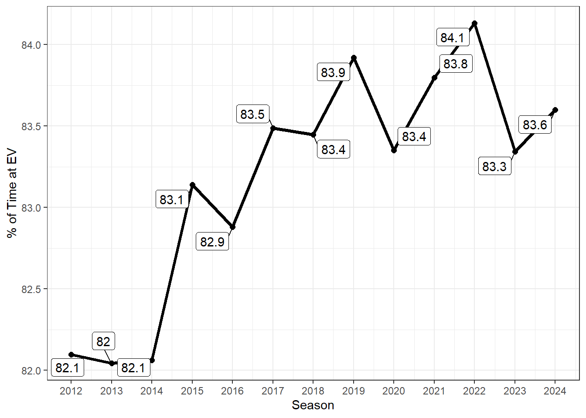
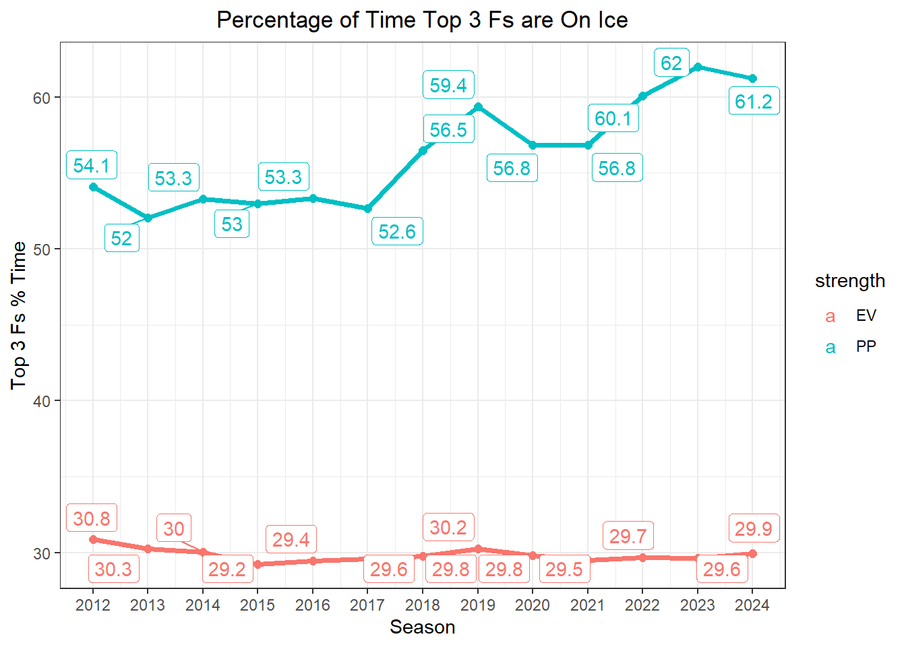
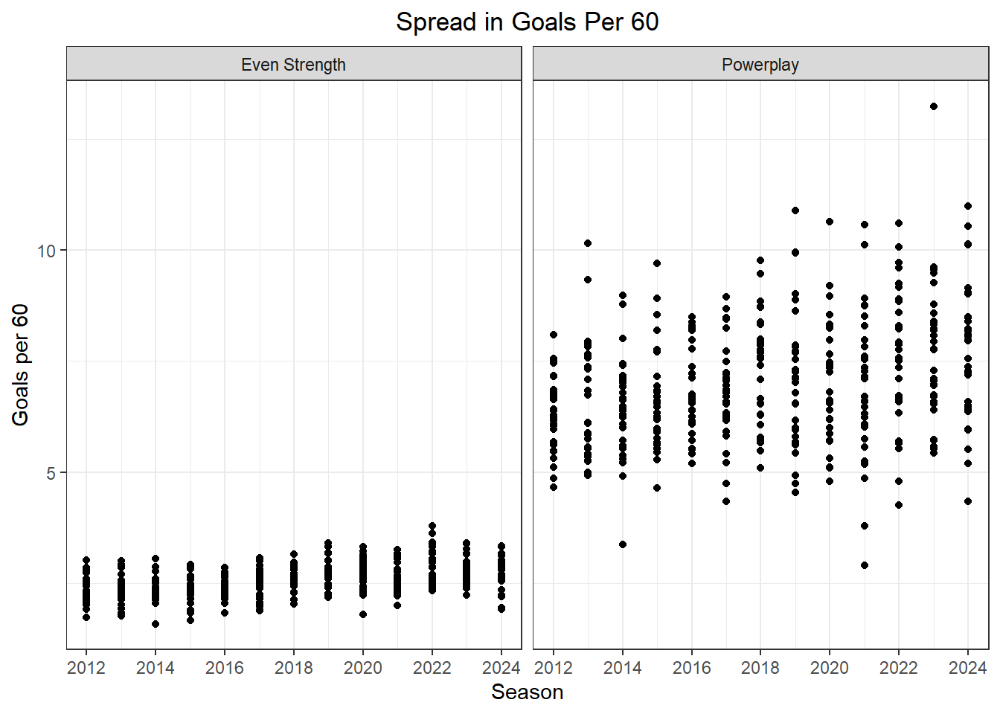

Last week, Travis Yost over at TSN wrote about the increase in correlation between powerplay effectiveness and overall team success. The natural conclusion is that an effective powerplay is, more so than ever, a driving force behind team success in the NHL. Correlation is not causation; if two measures are correlated that does not mean there is a cause and effect relationship between those two measures. Still, effective powerplays result in goals scored and goals scored help drive goal margins. The name of the game, ultimately, is outscoring the other team. If a team does that more often than not, we should expect that team will be successful. Logically it would indicate that this relationship is in fact causal. That is not to say a good powerplay is the be all and end all. There are other facets of the game that contribute to a team’s success. But Yost was isolating the powerplay and that is what we are going to do here as well. To recreate Travis’ work, I pulled team-level data from Natural Stattrick going back to the 2011-2012 regular season and specifically looked at goals scored and conceded rates at even strength and for special teams and calculated the correlations (just like Travis) between points percentage and those four rates.
Here we can see that we have come to the same conclusion. The strength of the correlation between team success and powerplay scoring has generally been on the rise the past decade. The rest of the rates in question have stayed relatively stagnant, though scoring at even strength has slightly increased in import as the league on the whole puts more pucks in the back of the net. There are a couple of other items from this figure that are worth noting. The first are the strong correlations between goals conceded at even strength and success (the correlations for the goals conceded are negative because successful teams allow fewer goals). Obviously keeping the puck out of your own net is incredibly important. But measures of defense are more volatile year-over-year and there is less of a spread in the figures we see teams post because a team playing defense has less control over a given sequence that the offensive team. In season this matters a ton for wins and losses, but between seasons defensive success is much more difficult to project. Hence the focus on offensive results. That does not mean teams have no control over their defensive performance; moreover, it is muted relative to offense. That can be a post for another day.
Apologies for the brief digression. The second item is the tightening of the gap between powerplay and even strength offense. We do not see the same phenomena with penalty kill defense and even strength defense (most likely an artifact of what I was talking about above). We are now at the point that where powerplay offense provides close to as much signal for whether a team is good as even strength offense despite the fact that more than 80% of a given game, on average, is played at even strength. And that figure is rising in recent vintage.

In 2015 there is a clear change in officiating resulting in more game time played at even strength. The relative magnitude is small; we are talking a change on the order of a few percentage points. But this difference would make a careful observer suspect that, all else being equal, powerplay scoring should become a less important tool in a good team’s toolbox. That is very much not the case.
What are the possible causes for this change? I believe the main culprit is personnel usage. In the past decade, the usage of four forwards on the powerplay has more the doubled from about 40% of powerplay ice time to more than 80%, based on research from Daniel Nugent-Bowman over at the Athletic. Any individual who even passively has watched the NHL over the past 10 years could cite the fact that four forwards has been the most prevalent lineup of choice on the powerplay. Nevertheless the degree to which this has become in vogue is staggering and for good reason. According to research from Matt Cane (now of the Devils) back in 2015, four forward units attempt about 10 more shots per hour compared to their three forward counterparts and post a shooting percentage 13% higher. The latter point is not particularly surprising. For forwards who played at least 500 minutes in all situations last year, the median shooting percentage was about 10%. Their peers on defense only posted a median rate of a shade above 4.2%. Forwards are more apt to take shots closer to the net and defensemen (with the exception of a few coaches/clubs that allow their weak-side defensemen to aggressively pinch down the wall) generally are content to fire shots from the blue line.
So teams are putting more forwards out on the ice, which results in more goals on the powerplay and thus more goals overall. Putting goals on the board is always a good idea especially when the downside risk on the powerplay is small in terms of the chances of allowing a goal the other way. In that same piece from Cane, he found that four forward units allow marginally more shot attempts with a shooting percentage about three percentage points worse. Put it all together and four forward units should be expected to yield about 2 more goals (in terms of goal differential, so accounting for the difference in offense conceded) per hour. To take it one step further, teams are not only putting more forwards out on the ice, but they are concentrating that playing time in their best offensive players. I used points scored as a proxy for isolating the top three forwards on each team going back to the 2011-2012 season. The best offensive players are not strictly the top point scorers. There is more to driving offense than scoring points. But as a proxy for this analysis I thought this would be a decent way to pull the top offensive threats for each club without pulling out the old RAPM model. And, as an aside, player deployment is more driven by point scoring than a more rigorous model for player evaluation, for better or for worse (narrator: for worse).
Back to the analysis at hand. Taking these aforementioned players, I charted by season the average percent of each teams total powerplay time those players were on the ice. As you can see, there has been a sharp increase to the tune about about 20% more playing time.

Over this time frame the percentage of minutes played at even strength has been stagnant and we can see the sharp increase in powerplay ice time. If the best players are playing more on the powerplay and we know that hockey is a strong-link game based on research from Dom Luszczyszyn of the Athletic and Alex Novet at Hockey Graphs, then it should come to no surprise that powerplay offense has started to become a more integral part of how teams win games. This manifests itself in the spread in powerplay goal scoring rates being much larger than even strength rates. Granted, the smaller samples we have of powerplays on the ice will lend itself to more variance, but undoubtedly the fact that the best players are increasingly on the ice during powerplays is going to make it so that there is larger spread in success (given the assumption that hockey is a strong-link game). As you can see, that spread has widened as teams have begun to optimize their personnel usage, while at even strength the spread has been static over time.

What is likely the main culprit for the increased importance on powerplay scoring? I would argue it is player deployment. That is not to say this is the sole reason. Yost in his TSN piece mentioned tactics as another potential reason for these results and I would certainly agree. Teams more than ever are forgoing dumping the puck in favor of generating more controlled zone entries, which we know result in more scoring chances. This is something that can be studied from a multitude of angles and personnel usage is likely more than just the tip of the iceberg, but not the sole driver of the phenomenon. Digging into the data tracked by Corey Sznajder for his All Three Zones project would likely unearth even more insights. That is a project for another day. For now though, I believe we can safely assume that some not insignificant portion of powerplay importance is the direct result of these drastic changes in player usage over the past decade, so I will leave it there. If you have any questions, comments, or quibbles, feel free to reach out via any of the avenues outlined in the About tab of the site.